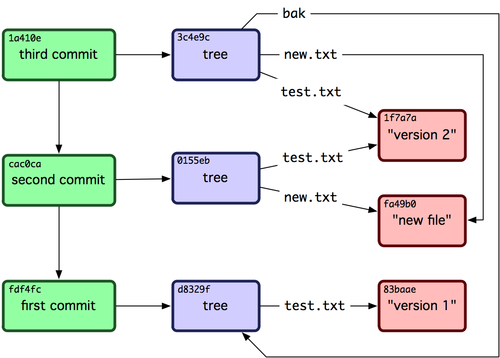

Git
Gustavo Sales
me = Gustavo.new
There is no substitute for hard work.
Thomas A. Edison
Simplicity is prerequisite for reliability.
Edsger Dijkstra
Freedom goes hand-in-hand with mutual respect
Xanana Gusmão
Jornal da RepúblicaDevote yourself to loving others, devote yourself to your community around you, and devote yourself to creating something that gives you purpose and meaning.
Mitch Albom, Tuesdays with Morrie
Back to business
História
CVS
SVN
Branching/Merging
Horrível!
Alternativas
- Mercurial
- Baazar
- BitKeeper
Git
Snapshots

Check-Sum
Três Estados

Git Objects
~ $ mkdir git_talk
~ $ cd git_talk
~/git_talk $ git init
Initialized empty Git repository in /Users/gustavosales/git_talk/.git/
~/git_talk $ find .git/objects
.git/objects
.git/objects/info
.git/objects/pack
~/git_talk $ find .git/objects -type f # looking for files
~/git_talk $ echo 'hello, git!' | git hash-object -w --stdin
171169be081d811e7adffae26cffece1af080806
~/git_talk $ find .git/objects -type f
.git/objects/17/1169be081d811e7adffae26cffece1af080806
~/git_talk $ git cat-file -p 171169be081d811e7adffae26cffece1af080806
hello, git!
~/git_talk $ echo 'primeira versao' > file.txt
~/git_talk $ git hash-object -w file.txt
4a118ae4df1b2188c39623a1b0b2d4e6e6fac899
~/git_talk $ echo 'segunda versao' > file.txt
~/git_talk $ git hash-object -w file.txt
9aeab9512b870bbca2d1d5416fa08477a5480f08
~/git_talk $ find .git/objects -type f
.git/objects/17/1169be081d811e7adffae26cffece1af080806
.git/objects/4a/118ae4df1b2188c39623a1b0b2d4e6e6fac899
.git/objects/9a/eab9512b870bbca2d1d5416fa08477a5480f08
~/git_talk $ git cat-file -p 4a11 > file.txt
~/git_talk $ cat file.txt
primeira versao
~/git_talk $ git cat-file -t 9aeab9512b870bbca2d1d5416fa08477a5480f08
blob
~/git_talk $ git add file.txt
~/git_talk $ git commit -m 'inital commit'
(...)
~/git_talk $ git cat-file -p master^{tree}
100644 blob 4a118ae4df1b2188c39623a1b0b2d4e6e6fac899 file.txt
Object Types
Git References
~/git_talk $ find .git/refs
.git/refs/heads
.git/refs/heads/master
.git/refs/tags
~/git_talk $ find .git/refs -type f
.git/refs/heads/master
~/git_talk $ cat .git/refs/heads/master
5326d0454cc9c34945d8fa71cdc201810a7f2e22
~/git_talk $ git cat-file -p 5326
tree cd654e586ab343d4a53c43032b0c52e193ae7a4d
author Gustavo Sales < gustavo.sales@jazz.etc.br > 1363109105 -0300
committer Gustavo Sales < gustavo.sales@jazz.etc.br > 1363109105 -0300
init
~/git_talk $ git checkout -b feature_01
Switched to a new branch 'feature_01'
~/git_talk $ cat .git/HEAD
ref: refs/heads/feature_01
~/git_talk $ git checkout master
Switched to branch 'master'
~/git_talk $ cat .git/HEAD
ref: refs/heads/master
~/git_talk $ echo 'alteracao' >> file.txt
~/git_talk $ git commit -am 'alterando file.txt'
[master 5832d50] alterando file.txt
1 files changed, 1 insertions(+), 0 deletions(-)
~/git_talk $ git log --pretty=oneline feature_01
5326d0454cc9c34945d8fa71cdc201810a7f2e22 init
~/git_talk $ git log --pretty=oneline master
5832d5071e974c748ff9a507e28c157d0205bb91 alterando file.txt
5326d0454cc9c34945d8fa71cdc201810a7f2e22 init
References

Tagging
~/git_talk $ git tag v0.0.1a
~/git_talk $ cat .git/refs/tags/v0.0.1a
5832d5071e974c748ff9a507e28c157d0205bb91
~/git_talk $ git cat-file -p 5832
tree 44b96280e1c684948d14f67b346686cfd90b9d78
parent 5326d0454cc9c34945d8fa71cdc201810a7f2e22
author Gustavo Sales < gustavo.sales@jazz.etc.br > 1363115243 -0300
committer Gustavo Sales < gustavo.sales@jazz.etc.br > 1363115243 -0300
alterando file.txt
~/git_talk $ git tag -a v0.0.2 -m 'criando uma tag com anotacao'
~/git_talk $ cat.git/refs/tags/v0.0.2
21896d953ce2adaa0e6afa3ed879961236ebcf89
~/git_talk $ git cat-file -p 2189
object 5832d5071e974c748ff9a507e28c157d0205bb91
type commit
tag v0.0.2
tagger Gustavo Sales < gustavo.sales@jazz.etc.br > Tue Mar 12 16:23:52 2013 -0300
criando uma tag com anotacao
~/git_talk $ git show v0.0.2
tag v0.0.2
Tagger: Gustavo Sales < gustavo.sales@jazz.etc.br >
Date: Tue Mar 12 16:23:52 2013 -0300
criando uma taga com anotacao
commit 5832d5071e974c748ff9a507e28c157d0205bb91
Author: Gustavo Sales < gustavo.sales@jazz.etc.br >
Date: Tue Mar 12 16:07:23 2013 -0300
alterando file.txt
diff --git a/file.txt b/file.txt
index 4a118ae..f49e068 100644
--- a/file.txt
+++ b/file.txt
@@ -1 +1,2 @@
primeira versao
+alteracao
Remote
~/git_talk $ git remote add origin git@git.jazzbr.com:gustavosales/git_talk.git
~/git_talk $ git push origin master
Counting objects: 6, done.
Delta compression using up to 2 threads.
Compressing objects: 100% (2/2), done.
Writing objects: 100% (6/6), 479 bytes, done.
Total 6 (delta 0), reused 0 (delta 0)
To git@git.jazzbr.com:gustavosales/git_talk.git
* [new branch] master -> master
~/git_talk $ cat .git/refs/remotes/origin/master
5832d5071e974c748ff9a507e28c157d0205bb91
~/git_talk $ cat .git/config
[core]
repositoryformatversion = 0
filemode = true
bare = false
logallrefupdates = true
ignorecase = true
[remote "origin"]
url = git@git.jazzbr.com:gustavosales/git_talk.git
fetch = +refs/heads/*:refs/remotes/origin/*
Refspec
~/git_talk $ cat .git/config
[core]
repositoryformatversion = 0
filemode = true
bare = false
logallrefupdates = true
ignorecase = true
[remote "origin"]
url = git@git.jazzbr.com:gustavosales/git_talk.git
fetch = +refs/heads/*:refs/remotes/origin/*
~/git_talk $ git log origin/master > log_origin_master
~/git_talk $ git log remotes/origin/master | diff log_origin_master -
~/git_talk $ git log refs/remotes/origin/master | diff log_origin_master -
~/git_talk $ git fetch origin master:refs/remotes/origin/mymaster
From git.jazzbr.com:gustavosales/git_talk
* [new branch] master -> origin/mymaster
~/git_talk $ vim .git/config
~/git_talk $ cat .git/config
[core]
repositoryformatversion = 0
filemode = true
bare = false
logallrefupdates = true
ignorecase = true
[remote "origin"]
url = git@git.jazzbr.com:gustavosales/git_talk.git
fetch = +refs/heads/*:refs/remotes/origin/*
push = refs/heads/master:refs/heads/qa/master
~/git_talk $ git push
To git@git.jazzbr.com:gustavosales/git_talk.git
* [new branch] master -> qa/master
Topic Branching
Workflow
Criando um branch
~/git_talk $ git branch feature_02
~/git_talk $ git branch
feature_01
feature_02
* master
~/git_talk $ git checkout feature_02
Switched to branch 'feature_02'
~/git_talk $ git branch
feature_01
* feature_02
master
Implementando...
~/git_talk $ echo 'implementing feature_02' > file_002.txt
~/git_talk $ git add file_002.txt
~/git_talk $ git commit -a -m 'implements feature_02'
[feature_02 3abe4df] implements feature_02
1 files changed, 1 insertions(+), 0 deletions(-)
create mode 100644 file_002.txt
Envia para code review...
~/git_talk $ git push origin feature_02
Counting objects: 4, done.
Delta compression using up to 2 threads.
Compressing objects: 100% (2/2), done.
Writing objects: 100% (3/3), 312 bytes, done.
Total 3 (delta 0), reused 0 (delta 0)
To git@git.jazzbr.com:gustavosales/git_talk.git
* [new branch] feature_02 -> feature_02
Recebe o OK
Ou não
Mergeia com o master
~/git_talk $ git checkout master
Switched to branch 'master'
gustavosales@gustavo:~/git_talk ruby-1.9.3-p392
(master)$ git merge feature_02
Updating 5832d50..3abe4df
Fast-forward
file_002.txt | 1 +
1 files changed, 1 insertions(+), 0 deletions(-)
create mode 100644 file_002.txt
Limpando a sujeira
~/git_talk $ git branch -d feature_02
Deleted branch feature_02 (was 3abe4df).
~/git_talk $ git push origin :feature_02
To git@git.jazzbr.com:gustavosales/git_talk.git
- [deleted] feature_02
Conflitos
Exemplo
~/git_talk $ git merge iss53
Auto-merging index.html
CONFLICT (content): Merge conflict in index.html
Automatic merge failed; fix conflicts and then commit the result.
~/git_talk $ git status
index.html: needs merge
# On branch master
# Changes not staged for commit:
# (use "git add < file >..." to update what will be committed)
# (use "git checkout -- < file >..." to discard changes in working directory)
#
# unmerged: index.html
#
(...)
Edite o arquivo
<<<<<<< HEAD:index.html
< div id="footer" >contact : email.support@github.com< /div >
=======
< div id="footer" >
please contact us at support@github.com
< /div >
>>>>>>> iss53:index.html
Adicione ao commit
(...)
# unmerged: index.html
#
(...)
~/git_talk $ vim index.html
~/git_talk $ git add index.html
~/git_talk $ git status
# On branch master
# Changes to be committed:
# (use "git reset HEAD < file >..." to unstage)
#
# modified: index.html
#
(...)Commite e Pushe
~/git_talk $ git add index.html
~/git_talk $ git status
# On branch master
# Changes to be committed:
# (use "git reset HEAD < file >..." to unstage)
#
# modified: index.html
#
(...)
~/git_talk $ git commit
~/git_talk $ git push origin master
Referências
Git bookScreencast do Akita